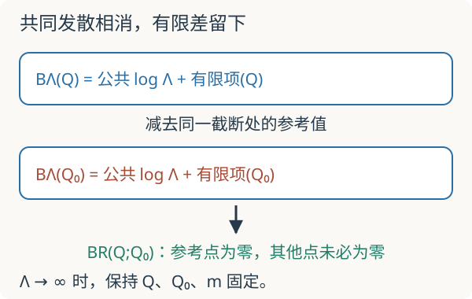

本页目录
场论计算桥 02 · 亲手算出对数，再做一次有条件的减法
先修：多元积分、Feynman 图、外腿截肢。目标：从一个四维欧氏泡图积分，推到显式截断结果、有限减法与尺度依赖。所有动量和质量同量纲，\(m>0\)；不把这个单通道计算冒充完整散射振幅。
1. 幂次计数告诉你会发散，还没告诉你答案
考虑欧氏动量 \(Q\) 下的标量积分
这里尚未带上顶点因子、对称因子或三个散射通道。大动量时分母是四次、径向测度是三次，所以有 \(\int d\ell/\ell\) 的对数行为。但幂次计数给不出有限项、动量依赖、反项的选择，也不能替代一次积分。
我们直接把这个欧氏积分当作计算对象，不在本讲证明 Minkowski 积分的 Wick 转动。\(m>0\) 与 \(Q^2\ge0\) 保证随后分母严格为正，避开了这里不处理的红外及阈值问题。
2. 合并两个分母：每一步都有条件
对正数 \(A,B\)，有
当 \(A\ne B\) 时对 \([B+x(A-B)]^{-2}\) 直接积分，端点相减就给 \(1/(AB)\)；\(A=B\) 时被积函数为常数 \(1/A^2\)，公式仍成立。这就是本例所需的 Feynman 参数化。
将两分母代入，配平方并令 \(k=\ell+(1-x)Q\)：
为避免悄悄平移一个已截断的区域，我们在变换之后定义正规化：对每个 \(x\) 积分取 \(|k|<\Lambda\)。这是一种明确的计算处方，不声称与原始 \(|\ell|<\Lambda\) 的有限截断逐点相同，也不用于保证规范对称性。
四维单位三球面积为 \(2\pi^2\)，因此测度化为
3. 把径向积分算到最后
先记 \(I(\Lambda,M)=\int_0^\Lambda k^3dk/(k^2+M^2)^2\)。令 \(u=k^2+M^2\)，则 \(k^3dk=(u-M^2)du/2\)。所以
在 \(\Lambda/M\to\infty\) 时，
对数里是无量纲比值；写 \(\log\Lambda\) 时隐含了参考单位，不能把有单位的数直接放进对数。常数 \(-1/2\) 也是真实积分的一部分，只有先指定减法才能决定它怎样进入参数定义。
例如 \(M=1,\Lambda=10\)（使用同一质量单位），精确值约为 1.81251；只保留 \(\log10-1/2\) 得 1.80259，两者差约 0.00993。有限截断的余项可以算，并不等于严格为零。
4. 同一处方、同一参数，才能相消
取参考欧氏动量 \(Q_0\)，定义减法后的泡图
两项必须使用同一截断处方、同一质量及同一参数化。发散项与公共常数相消，得到
现在 \(B_R(Q_0;Q_0)=0\)，且 \(Q^2>Q_0^2\ge0\) 时结果为负。它不是“把所有无穷大删掉”得到的任意答案：减法点规定了有限部分。在固定 \(Q,Q_0,m\) 时取截断极限也不可省略；让外动量随着截断同步趋于无穷，是另一个极限问题。

5. 与反项、跑动参数有什么关系
用一个明确标注的单通道教学量说明账本。设到二阶
其中 \(c\) 是事先固定的组合系数，正负由所定义的量决定。规定 \(F(Q_0)=g_R\)，反解裸参数并保留到同一阶：
裸参数展开中的负项 \(-cg_R^2B_\Lambda(Q_0)\) 是这一阶的反项；它与圈图组合后留下有限修正 \(cg_R^2B_R(Q;Q_0)\)。到无截断表达式的过程按微扰阶数组织，不是让裸级数在任意大 \(\Lambda\) 下一致收敛。更换 \(Q_0\) 时，\(g_R\) 的数值须一起改变，描述的物理量才能在计算精度内不变。截断 \(\Lambda\)、减法点 \(Q_0\)、实际外动量 \(Q\) 各有职责。
完整 \(\phi^4\) 振幅还要加入 \(s,t,u\) 三个通道、因子与解析延拓；完整理论还涉及质量和场强重整化。本讲没有从单个欧氏积分推出完整 beta 函数，也没有证明非微扰理论存在。
默认 \(m=1,Q=2,Q_0=0,\Lambda=10\)。先预测：增大截断时，两条未减法积分和它们的差，哪些会趋于有限值？
默认 \(B_R(2;0)\approx-0.00312133\)；有限截断差约为 \(-0.00303864\)。实验对参数 \(x\) 用复合 Simpson 积分，对径向积分用上述解析式。误差既含有限截断效应也含数值积分误差，图像不能替代极限推导。保持参数不变，将截断从 10 增到 20，差应更接近同一减法极限。
6. 两道验收题
题一。 固定 \(M>0\)，求 \(I(2\Lambda,M)-I(\Lambda,M)\) 在大截断极限的值。为何不是零？
核对渐近项
两项的 \(-1/2\) 抵消，\(\log(2\Lambda/M)-\log(\Lambda/M)=\log2\)，余项趋零。这里比较的是不同截断的同一个未减法积分，不是同截断下两个物理动量点的减法。
题二。 取 \(Q_0=0\)、\(Q\ll m\)，求 \(B_R\) 的最低非零阶。
核对低动量展开
用 \(\log(1+y)=y+O(y^2)\)，\(\int_0^1x(1-x)dx=1/6\)，得到 \(B_R=-Q^2/(96\pi^2m^2)+O(Q^4/m^4)\)。这也核对了结果的符号和量纲。\(m\to0\) 时不能继续使用这个展开。
速查与返回研究课
参数化 → 配平方 → 明确正规化区域 → 算径向积分 → 指定减法条件 → 保留有限动量依赖。返回路径积分与重整化理解 RG，或进入散射振幅。
一手教学来源：David Tong：The Renormalisation Group，用于圈积分、短波模式与重整化的背景；本页单通道减法处方与全部算例已明确写出。资料核查：2026-09-08。